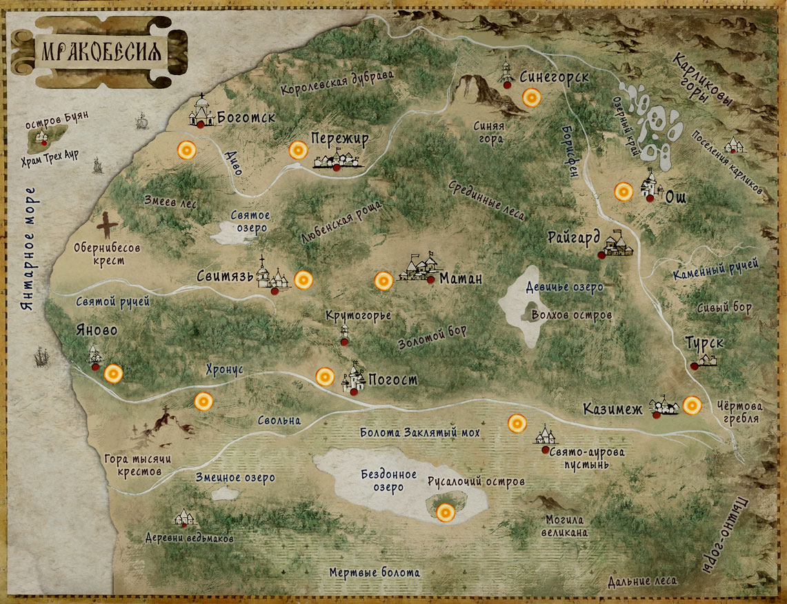

Уважаемые любители настольных игр, рады сообщить Вам, что наш проект собрал деньги на издание с помощью краудфандинга. Игра вышла! Благодарим всех, кто поверил в наш проект и поддеражал его!
Приложение для подсчета ресурсов
Карточная игра для 2 игроков. В базовый комплект с игрой входят три стартовых колоды – три армии, любой из которых можно управлять, чтобы разгромить войска противника. В процессе игры карты распределяются по нескольким зонам – двора и лагеря. У каждого игрока есть существа добывающие ресурсы (мифрил) и непосредственно боевые единицы. Выходя в зону лагеря, войска сталкиваются между собой и наносят урон противникам и непосредственно игроку. Можно также применять магию, ауры или использовать чудодейственные растения. Игра разделяется на время суток – при этом в темное время бонусы получают ночные существа, а в светлое время – дневные. Игра заканчивается, когда жизни игрока становятся равны нулю.
В рамках этой вселенной уже написано несколько книг: повесть «Мракоборец», рассказывающая о странствующем монахе, чей визит к небольшому невзрачному Порталу породил череду событий, навсегда изменившую все вокруг. Кроме того, издана серия книг из цикла «Сказки Мракоборцев» – ряд небольших историй в жанре юмористической сказки. Запущен цикл «Бремя Владыки», подробно описывающий предысторию конфликта, который лег в основу сеттинга игры. В 2024 году в издательстве «Вече» вышла первая книга цикла – «И нет дорог в город тени».


Мир Мракоборцев рядом с нами. Мы живем практически в нем. И хотя там нет бетонных городов с небоскребами, в нем есть удивительной красоты города из дерева и камня. В нем нет дорог и магистралей. Магические порталы мгновенно перенесут Вас в любой уголок страны. Владыкой этой прекрасной державы называют Великого Мага Серебряной Башни. Как говорят, ему ведомы пути всего живого. Будущее и прошлое этого мира для него равно ясно. Но с некоторых пор он перестал заботиться о неважных мирских делах своей страны и углубился в изучение Великих тайн. Вскоре страх и ужас поселился в сердцах его подданных. Старые распри и обиды различных народов стали разгораться с новой силой. Война стала захватывать кровавыми волнами былую ранее прекрасной стану. Чтобы противостоять хаосу на помощь угасающей державе пришли люди. Такие, как мы. Такие, как Вы…
Сформируйте свою колоду из 41 карты одного из трех типов существующих на сегодняшний день персонажей – Церкви, Детей Леса или Темных магов. Выберите себе Владыку вашей армии и Наместника, который поведет в бой Ваши отряды. Вот и все – можно открывать магический Портал и устремляться на неприятельский город. И уже скоро об этом сражении Барды сложат легенды!

В стартовые наборы входят
Темные маги: Искушенный маг (Владыка), Искушенный в бою (Наместник), Искушенный в знании (Наместник), Искушенный в Мифриле (Наместник). Карты: Анчутка (2), Бабай (1), Брухун (2), Ведогонь (2), Ведьмак (2), Ведьма (2),
Вий (1), Возмездие мертвецов (2), Вритра (1), Дед (2), Карачун (2), Коловертыш (2), Клад мертвеца (1), Лихорадка (3), Магический удар (2), Разрытые могилы (2), Туман (1), Призрак (2), Хапун (2), Шуликун (3).
Церковь: Поверенный Церкви (Владыка), Избранный тактик (Наместник), Освященный Торговец (Наместник), Церковный лидер (Наместник). Карты: Лучник (2), Дьякон (2), Епископ (2), Застрельщик (2), Инквизитор (2), Конный
рыцарь (2), Мастер Меча (1), Паладин (2), Пикинер (3), Послушник (2), Бард (2), Рыцарь (1), Разведчик (1), Сборщик налогов (4), Святой дух (1), Святая защита (2), Святая казна (3), Святой мститель (1), Странствующий монах
(1), Чистильщик (1).
Дети Леса. Хозяин леса (Владыка), Великий дуб (Наместник), Страж чащи (Наместник), Вожак стаи (Наместник) Карты: Кладовик (3), Баган (1), Барвинок (1), Белая дева (2), Боли-бошка (1), Водяна (2), Волколак (3), Волчий
пастырь (2), Жабалака (2), Зверь-Индр (1), Ичетик (1), Кошкалачень (2), Лешак (1), Лунный лисохвост (2), Мавка (2), Пущевик (2), Разрыв трава (2), Травница (2), Ховало (1), Цветущий папоротник (4).
Хотим обратить ваше внимание, что иные наборы не тестировались, но мы уверены, что можно сформировать еще более сбалансированные колоды. Поэтому обращаемся ко всем с просьбой присылать свои варианты колод (из представленных
на сайте карт) с подробным разбором игрового процесса. Игроки, которые выдвинут самые интересные идеи, получат в подарок комплект игры, майку с нашим логотипом, или книгу «Мракоборец» с автографом автора.
Внимание! По вопросам приобретения и распространения игры обращайтесь по адресу: butovil@yandex.ru